Round 275. Owner: “change out round finials (like c top serif)” and, on the round-273 ladder, “a works but my ask was about the round finials.” The c’s top as drawn is the model: the stroke swells to 1.10 of the pen over its first 13% and ends on a face sheared 28 degrees toward the vertical, no lip. The seven flared-cut ends that read as balls (f r y a J, the 3’s two ends, the 5’s bowl end) now take that construction from one helper. The c is byte-identical. Every roman weight moved; the italic did not. Full account: docs/albo-finials-2026-09-19.md.
Measured, design units, 400 / 700
terminal
was
end width before
end width after
face before
face after
c top (model)
swell 1.10 / 13%, -28 deg
60.8 / 103.4
60.8 / 103.4
-28
-28
f hook end
flare 1.2 / 30%, cut 20
79.9 / 138.6
73.3 / 127.1
+20
+28
r arm end
flare 1.15 / 45%, cut 20
66.8 / 106.3
63.9 / 101.6
+20
+28
y tail end
flare 1.3 / 30%, cut 20
61.1 / 106.0
60.8 / 103.4 (floored to the c)
+20
+28
a hood end
flare 1.12 / 25%, cut 20
66.4 / 97.3
65.2 / 95.6
+20
-28
J hook end
flare 1.3 / 35%, cut 20
80.8 / 143.9
68.3 / 121.2
+20
+28
3 top
swell 1.1 / 10%, cut 20
60.7 / 105.2
60.7 / 105.2
+20
+28
3 bottom
flare 1.25 / 15%, cut 20
83.1 / 144.3
73.1 / 127.0
+20
+28
5 bowl end
flare 1.25 / 15%, cut 20
82.8 / 144.0
72.9 / 126.7
+20
+28
The face angle is stroke()’s signed cut: 28 toward the vertical, the sign chosen per end by the helper (the a’s hood heads down-left, so its sign is the c’s). Left as they are, after rendering: the j’s tail (a point), the g’s ear (a bar on the cut, at its floor), the ?’s hook start (a plain cut), the 2’s top (a blunt cut; its swell was removed in round 249), the 6’s top (thins to a cut), the 9’s tail (a wedge), and every dot.
Each converted letter
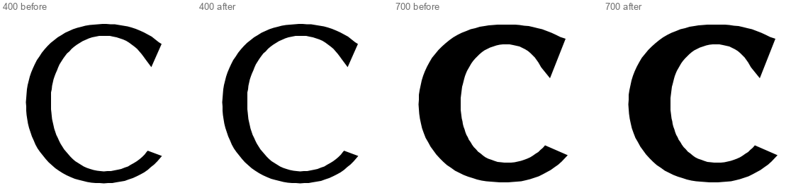
c -- 400 before, 400 after, 700 before, 700 after at 0.5 px/unit (font size 500 on a 1000 upm), native pixels. the model, NOT changed: the swell to 1.10 over the first 13% and the -28 degree face (byte-identical in all four builds)
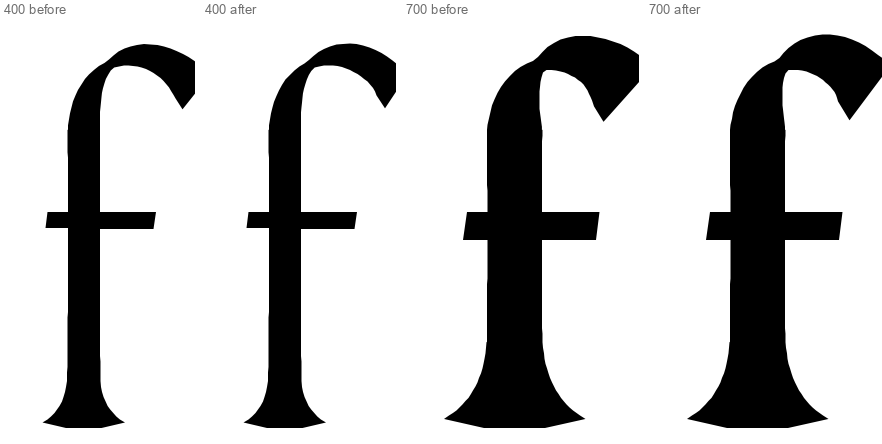
f -- 400 before, 400 after, 700 before, 700 after at 0.5 px/unit (font size 500 on a 1000 upm), native pixels. the hook: 1.2 flare over 30% into the 20 deg cut -> the finial; end 79.9 -> 73.3 (400), 138.6 -> 127.1 (700)
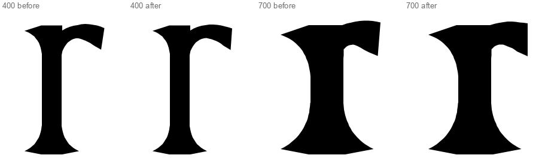
r -- 400 before, 400 after, 700 before, 700 after at 0.5 px/unit (font size 500 on a 1000 upm), native pixels. the arm: 1.15 flare over 45% -> the finial, near-vertical face; end 66.8 -> 63.9 (400), 106.3 -> 101.6 (700)
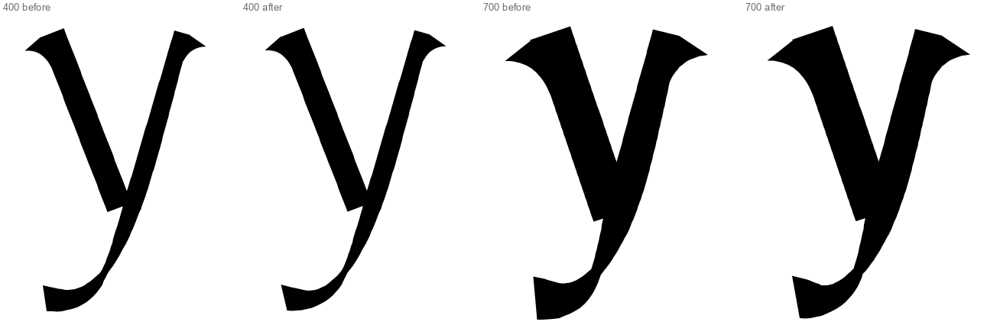
y -- 400 before, 400 after, 700 before, 700 after at 0.5 px/unit (font size 500 on a 1000 upm), native pixels. the tail: 1.3 flare over 30% -> the finial floored to the c's end (the tail runs on the pen's thin); end 61.1 -> 60.8 (400), 106.0 -> 103.4 (700)
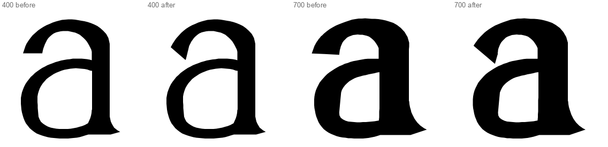
a -- 400 before, 400 after, 700 before, 700 after at 0.5 px/unit (font size 500 on a 1000 upm), native pixels. the hood: 1.12 flare over 25% (a teardrop) -> the finial, lower corner forward; end 66.4 -> 65.2 (400), 97.3 -> 95.6 (700)
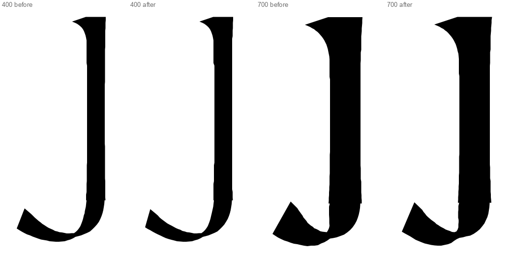
J -- 400 before, 400 after, 700 before, 700 after at 0.5 px/unit (font size 500 on a 1000 upm), native pixels. the hook: 1.3 flare over 35% -> the finial; end 80.8 -> 68.3 (400), 143.9 -> 121.2 (700). The top is the I's wedge and did not move
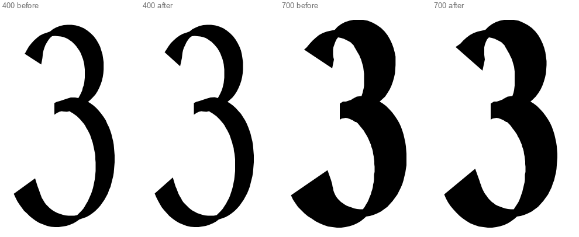
3 -- 400 before, 400 after, 700 before, 700 after at 0.5 px/unit (font size 500 on a 1000 upm), native pixels. top: 1.1 over 10% -> the finial (same end width, 60.7 / 105.2, span and face changed); bottom: 1.25 flare -> the finial, 83.1 -> 73.1 (400), 144.3 -> 127.0 (700)
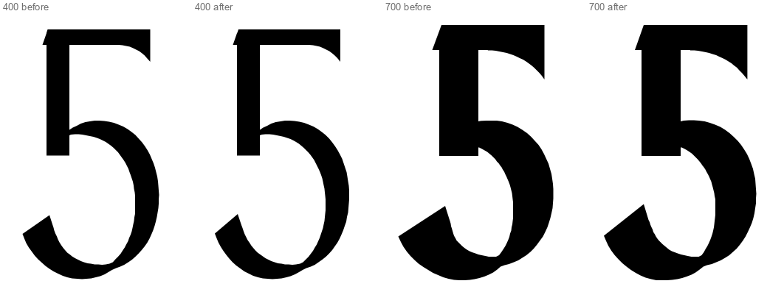
5 -- 400 before, 400 after, 700 before, 700 after at 0.5 px/unit (font size 500 on a 1000 upm), native pixels. the bowl's end: 1.25 flare -> the finial, 82.8 -> 72.9 (400), 144.0 -> 126.7 (700). The top is a bar with its wedge and did not move
Runs, all four roman weights
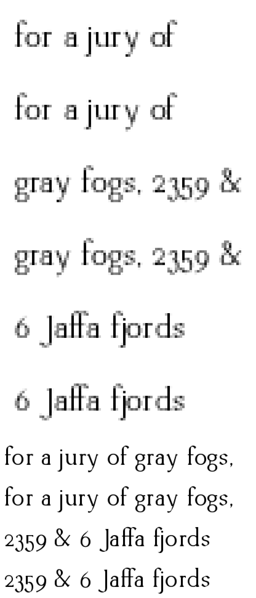
400: 13 px x8 NEAREST (three lines, each before then after) then 40 px x2 NEAREST (two lines, each before then after). "for a jury of gray fogs, 2359 & 6 Jaffa fjords"
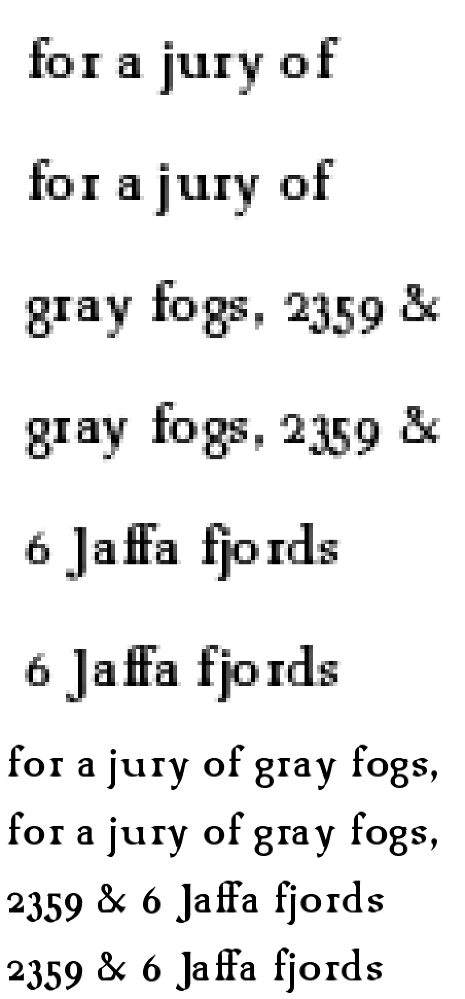
700: 13 px x8 NEAREST (three lines, each before then after) then 40 px x2 NEAREST (two lines, each before then after). "for a jury of gray fogs, 2359 & 6 Jaffa fjords"
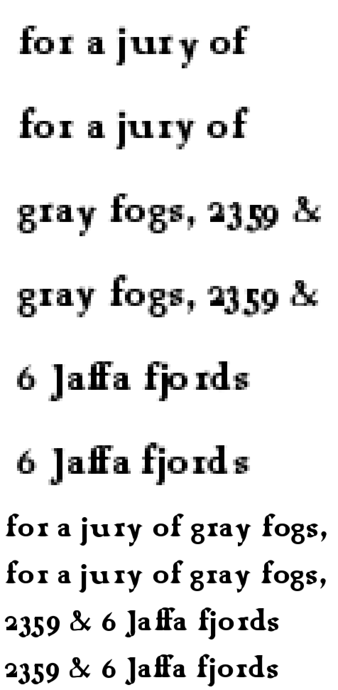
900: 13 px x8 NEAREST (three lines, each before then after) then 40 px x2 NEAREST (two lines, each before then after). "for a jury of gray fogs, 2359 & 6 Jaffa fjords"
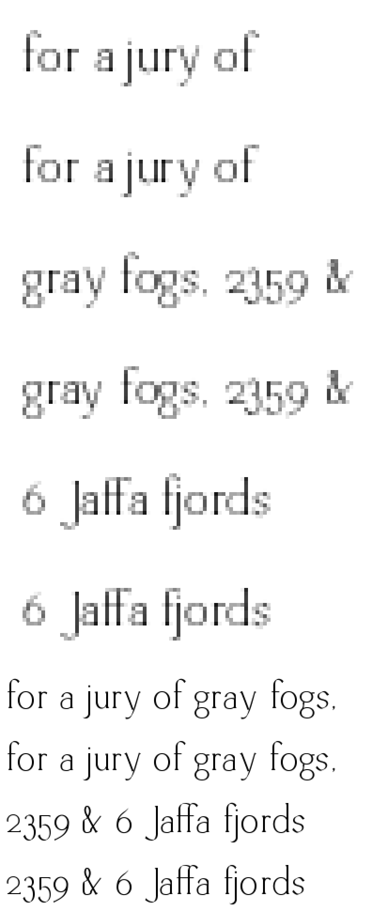
200: 13 px x8 NEAREST (three lines, each before then after) then 40 px x2 NEAREST (two lines, each before then after). "for a jury of gray fogs, 2359 & 6 Jaffa fjords"